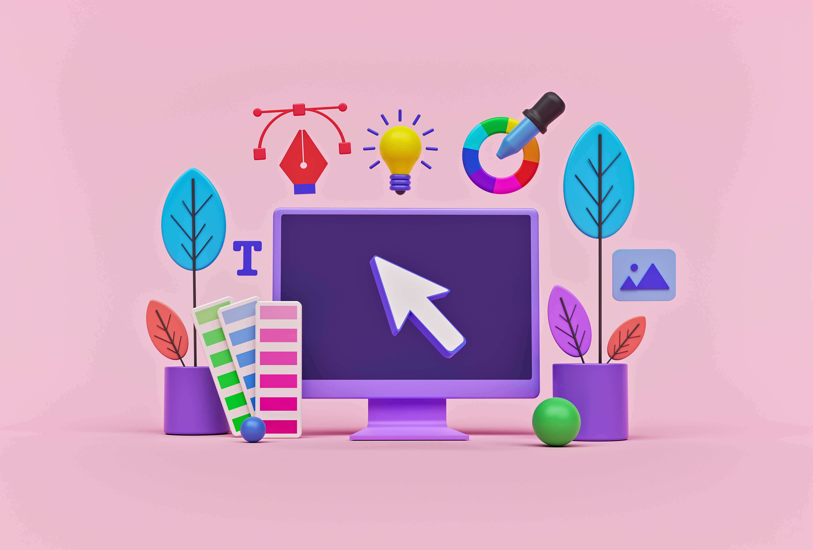
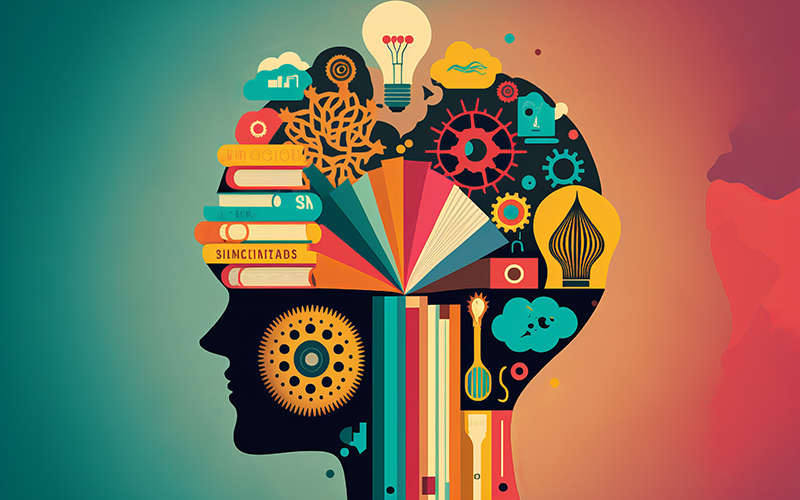
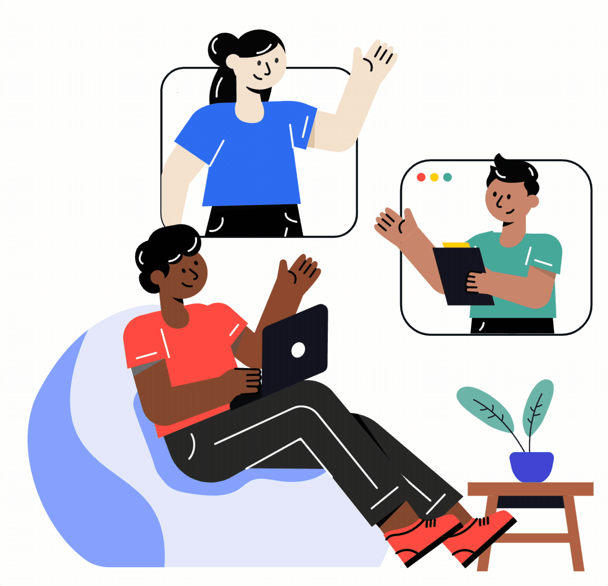
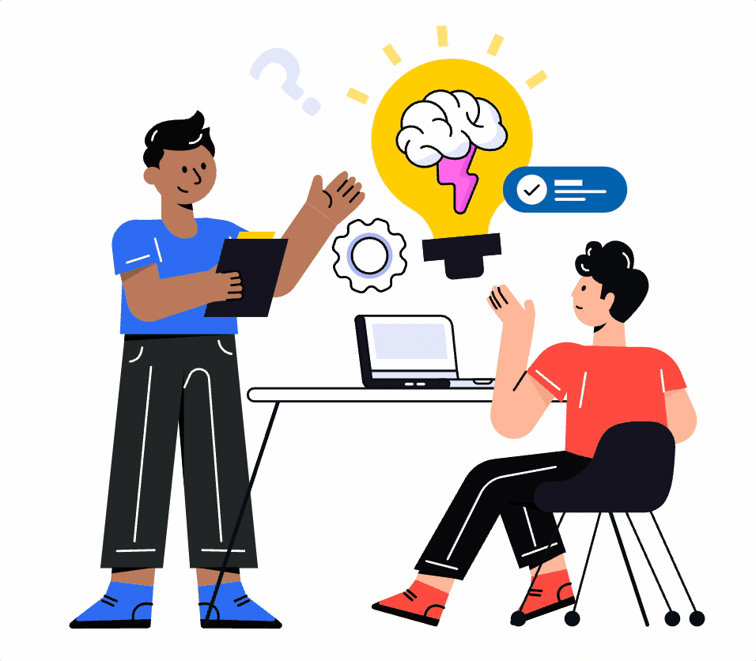
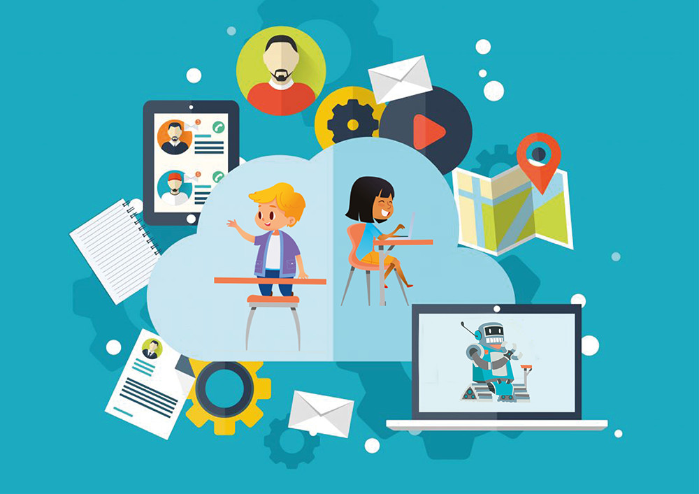

Manejo de información implica una capacidad de tener una organización, analizar los diferentes aspectos que se presentan e igualmente recopilar, esto ayuda para una toma de decisiones más eficiente e incluye habilidades como la búsqueda de información relevante, evaluación de fuentes, procesamiento de datos y aplicación de conocimientos para resolver problemas o innovar en el entorno de trabajo.
Aprender a aprender, como contexto laboral, es una capacidad de adquirir y adaptar conocimientos y habilidades de forma autónoma. Sirve para la resolución de problemas y tener un mejor desempeño laboral.
Comunicación se considera una habilidad laboral y en ámbitos generales, y sirve para transmitir y recibir información de manera más clara. Incluye la comunicación verbal y no verbal, importante para adaptarse en el ámbito laboral.
Colaboración en el ámbito social y laboral implica el trabajo en equipo, el cual ayuda a alcanzar objetivos comunes, aprovechando los conocimientos de cada integrante. Implica colaboración, comunicación efectiva y apoyo mutuo para favorecer la eficiencia en el trabajo.
Ciudadanía digital es una competencia laboral que permite alcanzar una mayor audiencia. Saber manejar redes sociales y medios digitales implica responsabilidad, tanto del creador como de la audiencia, para contribuir a un ambiente laboral positivo y profesional.
Trabajo en equipos multiculturales es una habilidad para colaborar de manera efectiva con personas de diferentes orígenes y culturas. Esto permite un aprendizaje mutuo y complementa el entorno laboral multicultural.